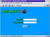

 WebMail/2 is a web to email gateway. It allows users to use their browser as an email client, and allows administrators to use their existing email solution on the web.
WebMail/2 allows you to use your web browser as a full-featured e-mail client. It does this by interfacing your web server with your e-mail server and allowing a web browser to send and receive e-mail information. You can use your existing email configuration.
A WebMail/2 system includes three items: an OS/2-based web server(s) which call the WebMail/2 CGI script, an e-mail server (POP3 and SMTP) which is not required to exist under OS/2, and the WebMail/2 WebManager. The CGI script communicates with the WebManager for authentication and connects to the email server to send and receive emails. The WebManager is responsible for handling authentication with the users database. It determines who is allowed to use the WebMail/2 system, and handles access control rights per IP address.
All three of these servers can run on the same machine, or each of these can run on their own machine. The two most popular configurations will be the single-server solution and the multi-server solution. A complex system may use multiple web servers to execute multiple WebMail/2 CGI scripts, which authenticate at the same users databas on the same or different WebManager.
In the single-server solution, all of these parts run on the same machine. Obviously, this machine must be running OS/2. This is the simplest to set up and debug. Unless your mail and web servers are already running on separate machines, or you forsee one of these services requiring its own machine in the near future, this will probably be the setup you want.
In the multi-server solution, your web server(s) and e-mail server run on different machines. In this case, only the web server must be running OS/2. With this solution, you get the ability to run whatever mail server you would like (that supports POP3 and SMTP, of course), under whatever operating system you would like. There are certain advantages to using an OS/2 e-mail server, however. Also you are allowed to run as many web servers as you like in case you have more than one servers/domains.
Theoretically, you could run the web server(s), e-mail server and WebMail/2 WebManager server each on their own machine, though this only makes sense on large networks which span through an intranet. The WebManager will run just fine on either the web server or an OS/2-based e-mail server.
| Author | Dimitrios 'sehh' Michelinakis |
|---|---|
| Home Page |
If you would like to help in the development of WebMail/2 or you would like to receive the latest beta versions then you can become a beta tester by joining the WebMail/2 mailing list. The list provides help and assistance for installation and configuration problems. You can also report bugs and request features that you would like to see in future versions.
To subscribe to the mailinglist, simply send a message with the word 'subscribe' in the Subject: field to the -request address of that list.
To: webmail2-request@michelinakis.gr
Subject: subscribe
To subscribe to the digest, simply send a message with the word 'subscribe' in the Subject: field to the following address.
To: webmail2-d-request@michelinakis.gr
Subject: subscribe
Please view open bug reports and report new bugs at the bug tracking report facility:
| Bug Tracking Report Facility |
This is a short list of web sites which use WebMail/2 in every day life.
| Site | Description |
|---|---|
| http://www.itisvinci.com | Istituto Tecnico Industriale Leonardo da Vinci |
| http://www.os2ug.se | Swedish OS/2 Users Group |
| http://celkunststoffen.khlim.be | Cel Kunststoffen, KHLim Dep. IWT |
| http://www.soundy.org | Matt's Site |
| http://www.bbfprinting.com | BBF Printing Solutions |
| http://www.comkal.net | ComKal Networks |
| http://www.os2site.com | OS/2 Site |
| http://www.sbt.net.au | SBT Internet Systems |
| http://www.conacom.de | Consulting and communication |
| http://www.flbsd.mb.ca | Fort La Bosse School Division # 41 |
| http://www.more4u.de | More4U GbR Internet Value Added Services |
| http://bbs.quasarbbs.net | QuasarBBS |
| http://www.dinosoft.it | DinoSoft ISP |
| http://www.netlabs.org | The OS/2 OpenSource Project |
| http://www.batrans.com | Batrans Transporti Internazionali |
| http://www.trss.net | TRSS Consulting |
| http://midnightshour.org | Midnight's Hour BBS |
| http://www.ite.pt | IfThenElse - Informatica, Sistemas & Servicos, Lda. |
{kind=link}